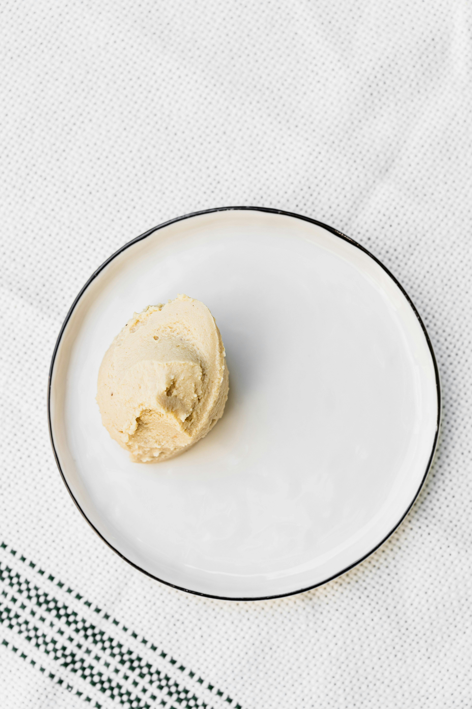

Home
Garlic Parmesan Hummus

Description
Follow this quick and easy recipe for a delicious dip to enjoy with a variety of snacks such as chips, veggies, and crackers!
Ingredients
- 1/2 head garlic
- 1/2 tsp olive oil
- Salt and freshly ground black pepper to taste
- 1/2 (15oz) can chickpeas, drained and rinsed
- 1/8 cup tahini
- 1/8 cup freshly grated parmesan cheese
- 1 1/2 tbsp extra-virgin olive oil
- 1 tbsp lemon juice
- 1/4 tsp freshly ground black pepper
- 1/8 tsp cumin
- 1/8 tsp salt
Steps
- Preheat oven 375 degrees F
- Place garlic head on a piece of aluminum foil. Drizzle olive oil over garlic and season with salt and pepper. Wrap foil around garlic to fully enclose and place on a baking sheet.
- Bake in the preheated oven until reoasted and tender, about 40 minutes. Remove garlic from aluminum foil; set aside until cool enough to handle. Remove garlic cloves from peels.
- Combine roasted garlic, chickpeas, tahini, parmesan cheese, olive oil, lemon juice, 1/2 tsp black pepper, cumin, and salt in a food processor or blender until smooth.